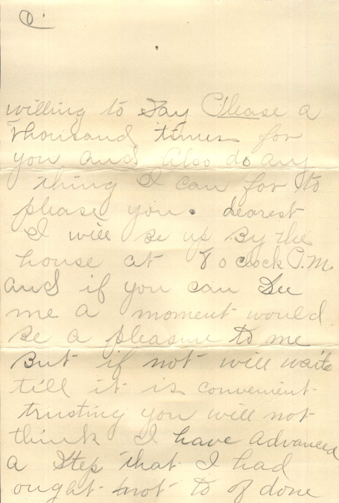
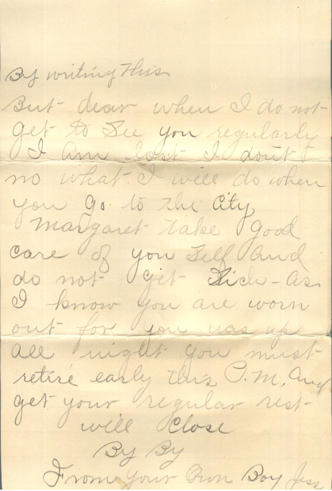
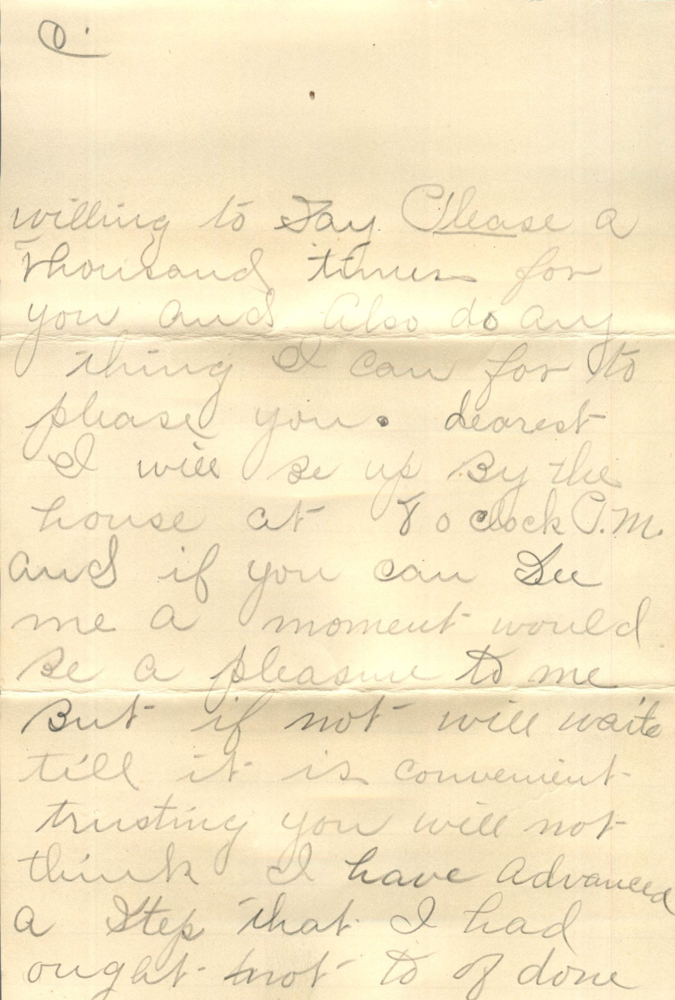
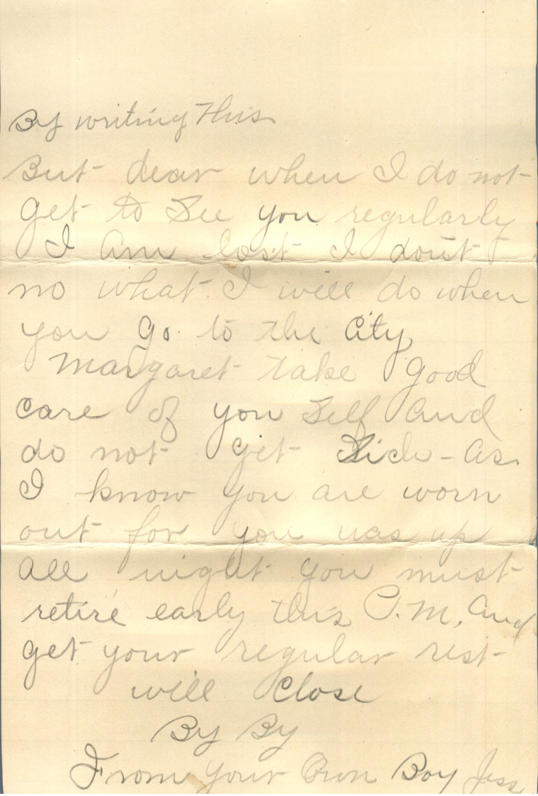

From: Jesse, To: Margaret
 
From: Jesse, To: Margaret
Fri Eve 5:40 P.M. At Home
Dearest One, As I feel so lonely this P.M. thought I would write you as I haven't seen you for two or three evenings. That is to converse with you. Sorry it was so that we could not be together last eve. Trusting it will so be I could see you at Sunday School next Lord's day if not before, trust it will be before. Was up past the house last PM. But could not see you - yourself and your sister's family's my sincere heartfelt sympathy in your and their trouble. Trusting the little one will continue to get better. Sorry dear you thought I was mad the eve we were conversing at a distance I sure was not and Margaret I am more than willing to say please a thousand times for you and also do anything I can for to please you.Dearest I will be up by the house at 8 o'clock P.M. and if you can see me a moment would be a pleasure to me. But if not will wait til it is convenient. Trusting you will not think I have advanced a step that I had ought not to of done by writing this. But dear when I do not get to see you regularly I am lost - I don't know what I will do when you go to the city. Margaret - take good care of yourself and do not get sick - as I know you are worn out for you was up all night you must retire early this P.M. and get your regular rest. Will Close By By From your own Boy Jesse